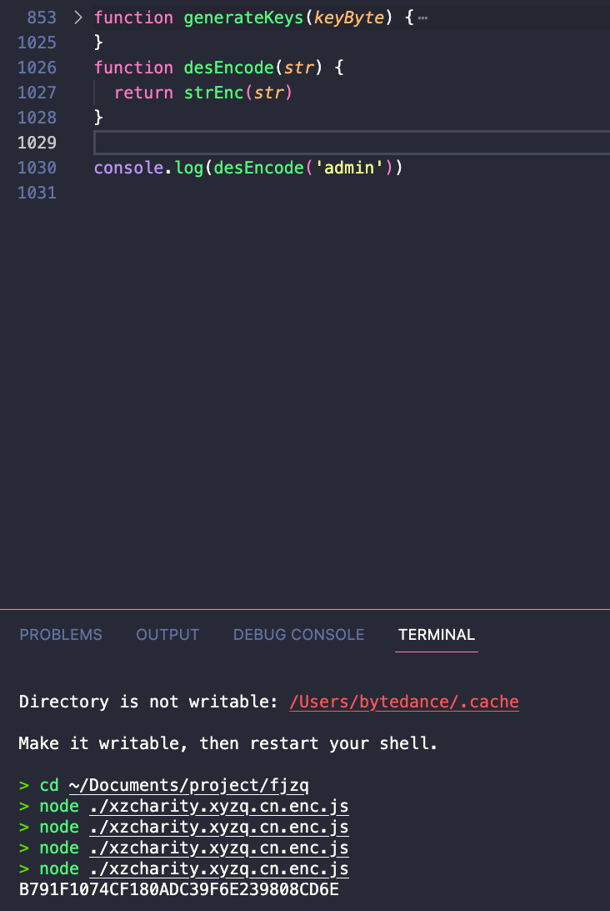
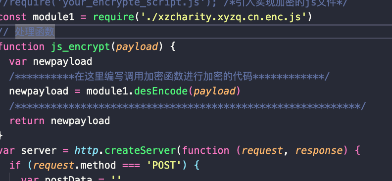
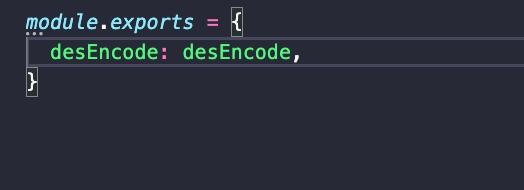
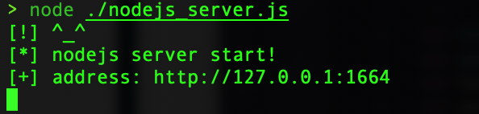

js前端加密
目录
大步骤
1.通过F12定位到js加密的地方，然后把js掏出来。 2.掏出来的js改一改，然后用node看能不能正常跑起来，跑起来的密文对不对

3.使用burp的这个插件https://github.com/c0ny1/jsEncrypter/tree/0.3.2 把js按照格式填好

加密脚本js记得用export导出加密函数

4.执行这个js文件

5.然后burp里payload processing选 Invoke Burp extension即可